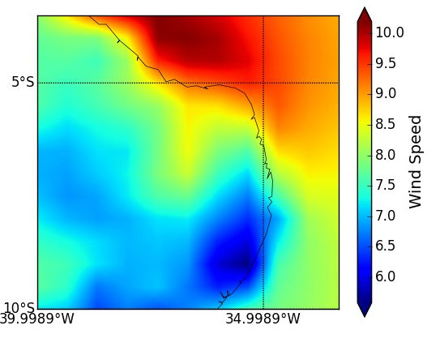
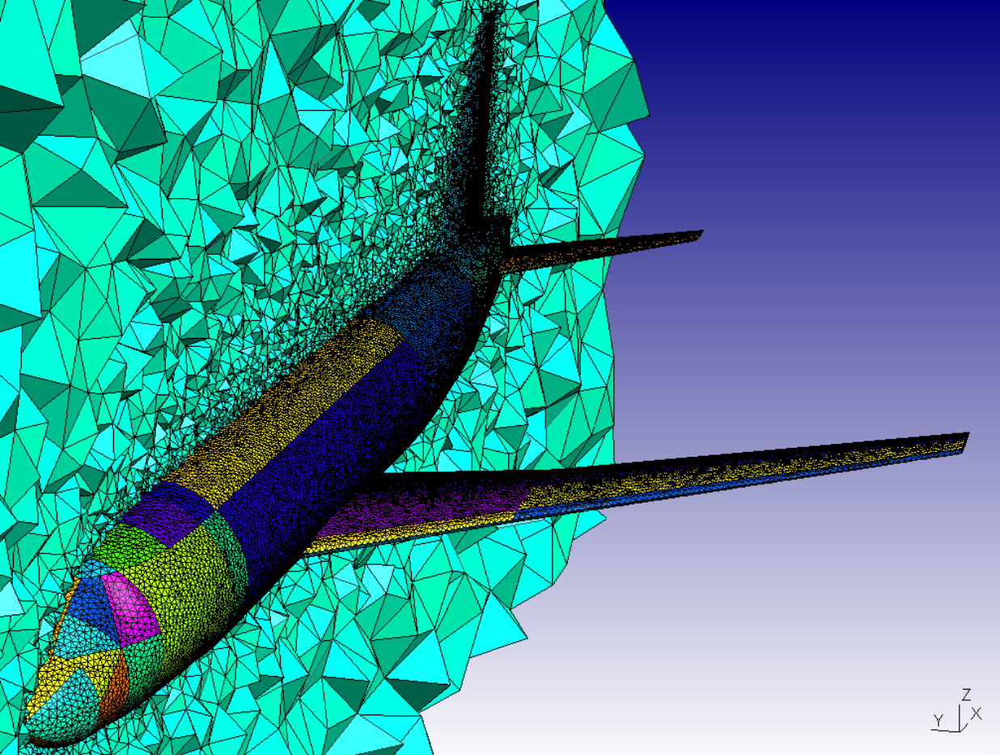
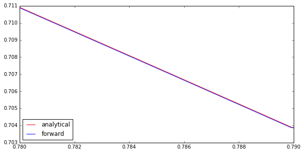
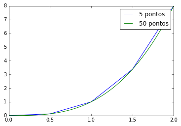
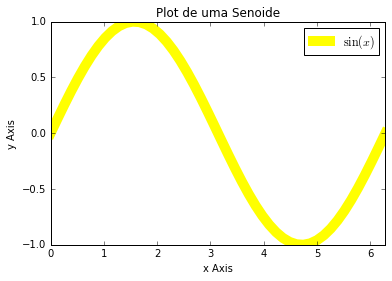
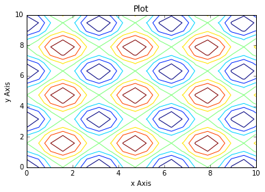
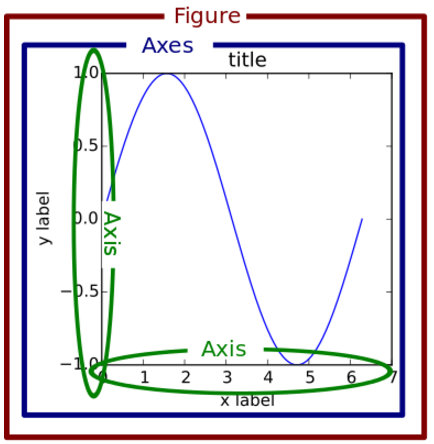
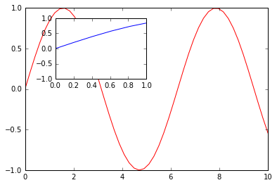

Curso de Python - 2 dia
Nasser Alkmim
Created: 2016-08-10 Wed 18:38
1 Introdução
1.1 Ementa
Nesse módulo serão tratados os seguintes assuntos:
- Numpy
- Matplotlib
- OOP
1.2 Motivação rápida

1.3 Motivação rápida

2 Numpy
2.1 O que é numpy?
- Biblioteca para computação científica em Python.
- Um equivalente ao Matlab
- Operações matriciais/vetoriais
- Kit para álgebra linear
2.2 Como usar
- Baixar a biblioteca
pip install numpy
conda install numpy
- Importar a biblioteca
import numpy as np
2.3 Criação de arrays
Arrays em 1D não são linha nem coluna
import numpy as np
vetor = np.array([1, 2, 3, 5])
print(vetor, vetor.T)
[1 2 3 5] [1 2 3 5]
matriz = np.array([[1, 2, 3],
[4, 5, 6]])
print(matriz)
[[1 2 3] [4 5 6]]
2.4 Convertendo lista para arrays
a = [[1, 2, 3], [10, 22, 33]]
A = np.array(a)
print('1 \n', a)
print('2 \n', A)
print('3 \n', a[1][2])
print('4 \n', A[1, 2])
1 [[1, 2, 3], [10, 22, 33]] 2 [[ 1 2 3] [10 22 33]] 3 33 4 33
2.5 Iniciando arrays
zero = np.zeros(5)
print(zero)
m_zeros = np.zeros((3,3))
print(m_zeros)
[ 0. 0. 0. 0. 0.] [[ 0. 0. 0.] [ 0. 0. 0.] [ 0. 0. 0.]]
2.6 Slicing de arrays 1D
A = np.linspace(0, 10, 11)
print('1', A)
print('2', A[:])
print('3', A[...])
print('4', A[5:7])
print('5', A[5:])
print('6', A[::2])
1 [ 0. 1. 2. 3. 4. 5. 6. 7. 8. 9. 10.] 2 [ 0. 1. 2. 3. 4. 5. 6. 7. 8. 9. 10.] 3 [ 0. 1. 2. 3. 4. 5. 6. 7. 8. 9. 10.] 4 [ 5. 6.] 5 [ 5. 6. 7. 8. 9. 10.] 6 [ 0. 2. 4. 6. 8. 10.]
2.7 Slicing de arrays 2D
np.set_printoptions(precision=1)
A = np.random.rand(5, 3)
print('1 \n', A)
print('2 \n', A[:, ...])
print('3 \n', A[:, 0])
print('4 \n', A[0, :])
1 [[ 0.9 0.7 0.7] [ 0.7 0.3 0.8] [ 0.8 0.2 0.2] [ 0.1 0.3 0.1] [ 0.9 0.4 0.5]] 2 [[ 0.9 0.7 0.7] [ 0.7 0.3 0.8] [ 0.8 0.2 0.2] [ 0.1 0.3 0.1] [ 0.9 0.4 0.5]] 3 [ 0.9 0.7 0.8 0.1 0.9] 4 [ 0.9 0.7 0.7]
2.8 Operações com matrizes
A = np.array([[1, 2, 3], [4, 5, 6]])
B = np.array([8, 9, 10])
c = 100
print(A, B, '\n')
print(np.shape(A), np.shape(B), '\n')
print(A*c, '\n')
print(A @ B) # Python 3.5
print(np.dot(A, B))
[[1 2 3] [4 5 6]] [ 8 9 10] (2, 3) (3,) [[100 200 300] [400 500 600]] [ 56 137] [ 56 137]
2.9 Solução de sistemas lineares
A = np.array([[1, 2, 3], [4, 5, 6], [2, 5, 6]])
B = np.array([8, 9, 10])
# Solve Ax=B
x = np.linalg.solve(A, B)
print(A, B)
print(x)
[[1 2 3] [4 5 6] [2 5 6]] [ 8 9 10] [-0.5 -6. 6.83333333]
2.10 Produto interno
a = [1, 2, 3, 4, 5]
b = [3, 4, 5, 6, 7]
sum = 0
for i in range(len(a)):
sum = sum + a[i] * b[i]
print(sum)
85
2.11 Produto interno pythonic
a = [1, 2, 3, 4, 5]
b = [3, 4, 5, 6, 7]
sum = 0
for x, y in zip(a, b): # unpacking os membros da lista
sum += x*y
print(sum)
85
2.12 Produto interno numpy
import numpy as np
a = np.array([1, 2, 3, 4, 5])
b = np.array([3, 4, 5, 6, 7])
print(np.sum(a*b))
85
2.13 Produto interno álgebra linear
import numpy as np
a = np.array([1, 2, 3, 4, 5])
b = np.array([3, 4, 5, 6, 7])
print(a @ b)
print(np.dot(a, b))
85 85
2.14 Polinômios
import numpy as np
print(np.roots([2, 0, -1])) # p[0] * x**n + p[1] * x**(n-1) + ... + p[n-1]*x + p[n]
p = np.poly1d([1, 0, 1]) # definir um polinômio em uma variável
print(p, '\n', np.roots(p), np.roots([1, 0, 1]))
[-0.70710678 0.70710678] 2 1 x + 1 [-0.+1.j 0.-1.j] [-0.+1.j 0.-1.j]
2.15 Diferenças finitas
import numpy as np
x = np.linspace(0.78, 0.79, 10)
y = np.sin(x)
dy_analy = np.cos(x)
dy_numer = [0.0]*len(x)
# print(dy_numer)
for i in range(len(y) - 1):
dy_numer[i] = (y[i+1] - y[i])/(x[i+1] - x[i])
dy_numer[-1] = (y[-1] - y[-2])/(x[-1] - x[-2]) # o ultimo termo
2.16 Comparação
%matplotlib inline
import matplotlib.pyplot as plt
plt.plot(x, dy_analy, '-r', label='analytical')
plt.plot(x, dy_numer, '-b', label='forward')
plt.legend(loc='lower left')

2.17 Integral
import numpy as np
x = np.array([0, 0.5, 1, 1.5, 2]) # Conjunto de dados com 5 pontos
y = x**3 # integral x4/4 0 a 2 = 4
integral = np.trapz(y, x)
error = (integral - 4)/4 # divide por 4 intervalos
print(integral, error)
4.25 0.0625
2.18 Integral
%matplotlib inline
import numpy as np
import matplotlib.pyplot as plt
x = np.array([0, 0.5, 1, 1.5, 2])
y = x**3
x2 = np.linspace(0, 2, 50)
y2 = x2**3
plt.plot(x, y, label='5 pontos')
plt.plot(x2, y2, label='50 pontos')
plt.legend()

2.19 Problema
M = np.zeros((3,3))
print(M)
gl = [0, 2]
m = np.array([[10, 11], [12, 13]])
print(m)
[[ 0. 0. 0.] [ 0. 0. 0.] [ 0. 0. 0.]] [[10 11] [12 13]]
2.20 Problema solução bruta
M = np.zeros((3,3))
gl = [0, 2]
m = np.array([[10, 11], [12, 13]])
for i in range(len(gl)): # loop em 0 e 1
for j in range(len(gl)): # loop em 0 e 1
M[gl[i], gl[j]] = m[i, j]
print(M)
[[ 10. 0. 11.] [ 0. 0. 0.] [ 12. 0. 13.]]
2.21 Problema pythonic
M = np.zeros((3,3))
gl = [0, 2]
m = np.array([[10, 11], [12, 13]])
id = np.ix_(gl, gl) # array (2, 1) e (1, 2)
print(id)
M[id] = m
print(M)
(array([[0],
[2]]), array([[0, 2]]))
[[ 10. 0. 11.]
[ 0. 0. 0.]
[ 12. 0. 13.]]
3 Matplotlib
3.1 O que é?
- Biblioteca para plotar gráficos 2D (principalmete)
- Pode ser usada de duas maneiras
- Pyplot –> módulo equivalente ao Matlab
- OOP –> "pythonic way"
3.2 Pyplot interface –> Matlab equilavente
%matplotlib inline
import numpy as np
import matplotlib.pyplot as plt
x = np.linspace(0, 2*np.pi, 50)
y = np.sin(x)
plt.plot(x, y, '-r') # Cria Figure e Axes
# Configurações
plt.xlabel('x Axis') # Usa o Axes atual
plt.ylabel('y Axis')
plt.title('Plot de uma Senoide')
plt.xlim(0, 2*np.pi)
plt.ylim(-1, 1)
plt.legend([r'$\sin(x)$']) # lista de strings

3.3 Exercício
Plotar a função
\(f(x) = 3 \cos(5x + \pi/2) + \cos(4pi/5)\)
3.4 Exercício solução
%matplotlib inline
import numpy as np
import matplotlib.pyplot as plt
x = np.linspace(0, 2*np.pi, 100)
y = 3*np.cos(5*x + np.pi/2) + np.cos(4*np.pi/5)
plt.plot(x, y, '-r') # Cria Figure e Axes
# Configurações
plt.xlabel('x Axis') # Usa o Axes atual
plt.ylabel('y Axis')
plt.title('Plot do Exercício')
plt.xlim(0, 2*np.pi)
# plt.ylim(-2, 2)
plt.legend([r'$Exercício$']) # lista de strings

3.5 Plot de Iso-linhas usando o módulo Pyplot
%matplotlib inline
import numpy as np
import matplotlib.pyplot as plt
x = np.linspace(0, 10, 20) # 1D array
y = np.linspace(0, 10 ,20) # 1D array
X, Y = np.meshgrid(x, y) # 2D array
Z = np.sin(X)**2 + np.sin(Y)**2 # Valor em cada ponto do plano (x,y)
plt.contour(X, Y, Z)
# Configurações
plt.xlabel('x Axis')
plt.ylabel('y Axis')
plt.title('Plot')

3.6 Conceitos gerais matplotlib OOP API
- Hierarquia

3.7 Criar Figure e Axes
%matplotlib inline
import numpy as np
import matplotlib.pyplot as plt # Usa o pyploy para criar o obj Figure apenas!
fig = plt.figure() # cria o objeto: Figure
ax = fig.add_axes([0.1, 0.1, 0.8, 0.8]) # cria o objeto: Axes, filho da Figure
fig.show()

3.8 Figure contém os Axes filhos
%matplotlib inline
import numpy as np
import matplotlib.pyplot as plt
fig = plt.figure()
ax1 = fig.add_axes([0.1, 0.1, 0.3, 0.3])
ax2 = fig.add_axes([0.5, 0.5, 0.3, 0.3])
fig.show()

3.9 E onde vejo os dados?
- Tudo que se vê dentro de um gráfico é chamado de Artist
- Os Artist são criados por métodos do objeto Axes
3.10 Criando Artists
%matplotlib inline
import numpy as np
import matplotlib.pyplot as plt
x = np.linspace(0, 10, 50)
y = np.sin(x)
fig = plt.figure()
ax = fig.add_axes([.1, .1, .8, .8]) # [lc, bc, wi, he]
ax.plot(x, y, '-r') # método do objeto Axes
# Configurações
ax.set_xlabel(r'$x$')
ax.set_ylabel(r'$y$')

3.11 Vantagem da abordagem OOP
%matplotlib inline
import numpy as np
import matplotlib.pyplot as plt
x = np.linspace(0, 10, 50)
y = np.sin(x)
fig = plt.figure() # Pyplot para criar Figure
ax1 = fig.add_axes([.1, .1, .8, .8])
ax2 = fig.add_axes([.2, .55, .3, .3])
ax1.plot(x, y, '-r')
ax2.plot(x, y, '-b')
ax2.set_xlim(0, 1) # Um detalhe

3.12 3 Dimensões - 2D arrays
%matplotlib inline
import numpy as np
import matplotlib.pyplot as plt
from mpl_toolkits.mplot3d import Axes3D
x = np.linspace(0, 1)
y = np.linspace(-2, 1)
X, Y = np.meshgrid(x, y) # 2D arrays
Z = (X - 3)**2 + (Y + 1)**2 # Função do espaço (x, y)
fig = plt.figure()
ax = Axes3D(fig)
ax.plot_surface(X, Y, Z, cmap='viridis') # Cira superfície

3.13 3 Dimensões Exemplo - 1D arrays
%matplotlib inline
import numpy as np
import matplotlib.pyplot as plt
from mpl_toolkits.mplot3d import Axes3D
n_angles = 36
n_radii = 8
radii = np.linspace(0.125, 1.0, n_radii) # raios
angles = np.linspace(0, 2*np.pi, n_angles, endpoint=False) # ângulos
angles = np.repeat(angles[..., np.newaxis], n_radii, axis=1)
x = np.append(0, (radii*np.cos(angles)).flatten())
y = np.append(0, (radii*np.sin(angles)).flatten())
z = np.sin(-x*y) # multiplicação termo a termo
fig = plt.figure()
ax = Axes3D(fig)
ax.plot_trisurf(x, y, z, cmap='viridis') # Cira superfície

3.14 Mayavi
from numpy import pi, sin, cos, mgrid
dphi, dtheta = pi/250.0, pi/250.0
[phi,theta] = mgrid[0:pi+dphi*1.5:dphi, 0:2*pi+dtheta*1.5:dtheta]
m0 = 4; m1 = 3; m2 = 2; m3 = 3; m4 = 6; m5 = 2; m6 = 6; m7 = 4;
r = sin(m0*phi)**m1 + cos(m2*phi)**m3 + sin(m4*theta)**m5 + cos(m6*theta)**m7
x = r*sin(phi)*cos(theta)
y = r*cos(phi)
z = r*sin(phi)*sin(theta)
# View it.
from mayavi import mlab
s = mlab.mesh(x, y, z)
mlab.savefig('img/plt-maya.png')
print('[[file:img/plt-maya.png]]')

4 OOP
4.1 O que é OOP?
- Programação Orientada Objeto
- É uma técnica de estruturação do programa
- Utiliza o conceito de Classes e Objetos
4.2 Motivação
# Funcionários (Objeto)
nome1 = 'João'
nome2 = 'Maria'
nome3 = 'Jose'
funcionarios = [nome1, nome2, nome3]
num_funcionarios = len(funcionarios)
# Salario de cada funcionario (Atributo)
salario1 = 10000
salario2 = 12000
salario3 = 8000
4.3 Como fica em formato de classe?
class Funcionario():
'Cria o objeto funcionario'
contador = 0 # atributo da classe (acessado por todas as instâncias)
def __init__(self, nome, salario):
'Método que inicia a classe'
self.nome = nome
self.salario = salario
Funcionario.contador += 1
def quantidade(self):
'Método que mostra o numero de funcionarios'
print(Funcionario.contador)
func1 = Funcionario('joão', 10000)
func2 = Funcionario('maria', 12000)
print(func1.nome, func1.salario) # Atributos dos objetos
print(func1.quantidade()) # Invocar um método
joão 10000 2
4.4 O que é uma Classe?
- É um construtor que define um tipo de dado
- Os dados ficam contidos num container lógico
- Usar quando houver padrões de comportamento, qualidades e sentido nos dados
- Contém as instruções para criar um objeto
- Permite a definição de numenclatura lógica - facilita a compreensão do código
class NomeDaClasse():
'Docstring explica o que a classe cria'
def __init__(self):
'Inicia a classe'
self.atributo = atributo
objeto = NomeDaClasse()
print(objeto.atributo) # Depois do '.' acesso aos atributos/métodos
4.5 O que é um objeto, método, atributo?
- Objeto
- Invocar uma classe significa instânciar um objeto
- Instância: significa "um exemplo", ou "um caso"
- As classes definem as características inerentes do objeto
- Atributo
- É uma qualidade do objeto
- Acessada com '.'
objeto.atributo
- Método
- É uma função definida na classe
- É do objeto
- Acessada com '.'
objeto.metodo()
4.6 O que é o parâmetro self e o método __init__?
selfé a própria instância (objeto) criada pela classe__init__inicializa o objeto
4.7 Exemplo
- Fazer uma classe que contenha instruções para dados de um cachorro
class Dog():
'Classe que define o cachorro'
def __init__(self, name, breed, color):
self.name = name # Aplica os atributos
self.breed = breed
self.color = color
def bark(self):
print('{} barks!!!'.format(self.name))
meu_cachorro = Dog('Euler', 'Poodle', 'Grey') # Instânciei a classe e criei o objeto
print(meu_cachorro.color)
print(meu_cachorro.bark())
Grey Euler barks!!! None
4.8 Exercício
Fazer uma classe para uma conta bancária
4.9 Resultado
class ContaBancaria:
def __init__(self):
self.balanco = 0
def saque(self, quantia):
self.balanco -= quantia
return self.balanco
def deposito(self, quantia):
self.balanco += quantia
return self.balanco
conta_da_maria = ContaBancaria()
conta_do_joao = ContaBancaria()
conta_da_maria.deposito(1000)
print(conta_da_maria.balanco)
conta_da_maria.saque(999)
print(conta_da_maria.balanco)
1000 1